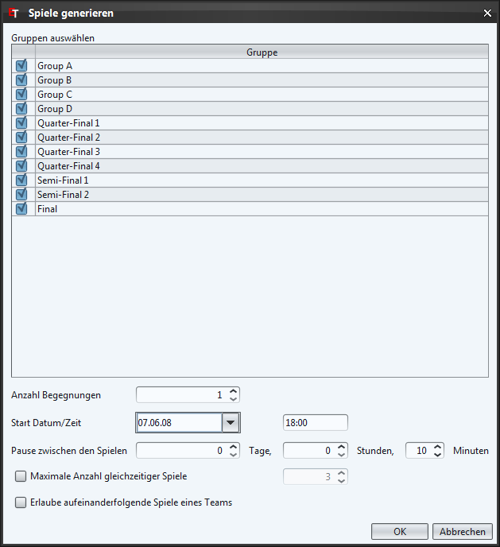

Über die Schaltfläche "Spiel hinzufügen" oder über das Kontextmenü (rechte Maustaste) kann ein einzelnes Spiel hinzugefügt werden.
Klicken sie nun in die Zelle der Heim-Position und wählen Sie die Position der Gruppe die bei diesem Spiel Zuhause antreten wird. Als nächstes wählen sie in der Auswärts-Zelle die Auswärts-Position. Optional können nun noch die weiteren Felder der Zeile ausgefüllt werden.
Die Tabelle wird nach dem Datum und der Zeit sortiert.
Schiedsrichter können nur ausgewählt werden, wenn sie diese auf der Seite Schiedsrichter erfasst haben. Möchten sie die Schiedsrichter nicht erfassen und diese Spalte ausblenden, dann können sie dies in den Einstellungen machen.

Über die Schaltfläche "Spiele generieren" können Spiele für ganze Gruppen erstellt werden.
Wählen sie dazu die Gruppen für welche sie Spiele erstellen möchten. Bei "Anzahl Begegnungen" legen sie fest wie viele Spiele ein Team gegen jedes andere Team der Gruppe haben soll (Heim- und Auswärtsspiele werden falls möglich gleichmässig erstellt).
Bei "Pause zwischen den Spielen" wird von der regulären Spielzeit ausgegangen. Im obigen Beispiel beginnt das zweite Spiel um 19:40 (18:00 + 90 Minuten reguläre Spielzeit + 10 Minuten Pause).
Falls sie "Maximale Anzahl gleichzeitiger Spiele" auswählen, können sie angeben wie viele Sportplätze für das Turnier zur Verfügung stehen.
Standardmässig wird beim Erstellen von Spielen darauf geachtet, dass kein Team zwei Spiele unmittelbar hintereinander hat. Wenn sie dies jedoch erlauben möchten, können sie "Erlaube aufeinanderfolgende Spiele eines Teams" auswählen.
Um die Team Namen anstelle der Positionen anzuzeigen können sie auf den im obersten Bild grün markierten Knopf klicken. Dies funktioniert natürlich nur, wenn die Teams zu den Gruppen hinzugefügt wurden (mehr dazu Gruppenzuweisung).
Mit der Drop-Down-Liste (im obersten Bild rot markiert) lässt sich der Spielplan filtern (nach Gruppe, Team oder Schiedsrichter).
Der Spielplan lässt sich als CSV (z.B. für Tabellenverarbeitungsprogramme wie MS Excel) oder als HTML Datei exportieren. Dazu wählen sie das Menü "Datei"->"Exportieren..." und im sich öffnenden Dialog den Eintrag "Spielplan".
Im Speichern-Dialog (siehe nächstes Bild) können sie nun den gewünschen Dateityp auswählen.